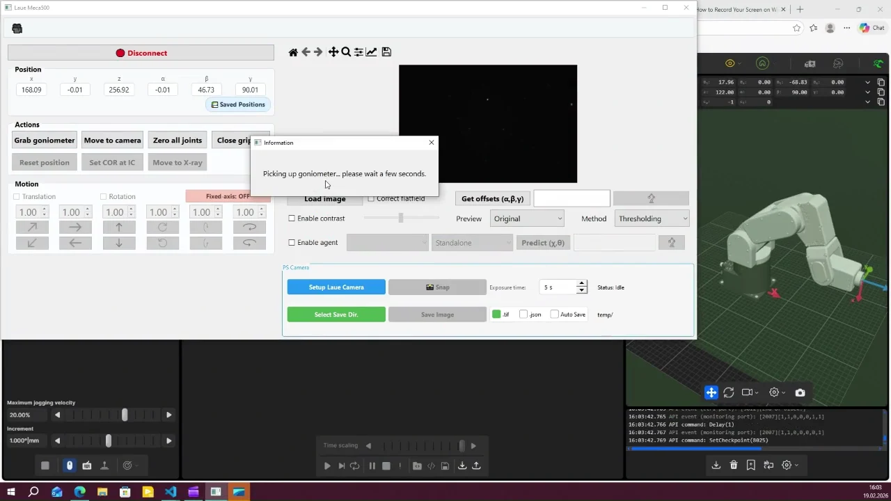

Laue automation · Try it yourself
Turn a crystal.
Move a whole pattern.
Same crystal, different orientation. Watch the spots move and the pattern’s symmetry change as you tilt it.
What does this simulation show?
A simple cubic lattice, illuminated by a range of X-ray wavelengths (0.35–2.5 Å), with a flat detector on the source side of the crystal (back-reflection). Spot positions are calculated from diffraction geometry for each orientation. The central opening lets the incoming beam through. Overlapping harmonics share a spot.
This teaching model uses a 3.6 Å lattice spacing and a finite set of reflections. Spot brightness is illustrative; this is not a measured pattern or a prediction for a particular material. The challenge compares crystal orientations, allowing for equivalent orientations of a cube.

Bachelor’s & Master’s projects / Laue automation
A tiny crystal.
A smarter lab.
You’ve moved the crystal. Now imagine teaching a robot to align it. Build the cameras, code and controls that make a smarter lab possible.
01 / The idea in a minute
Give a crystal lab
a helping hand.
Finding, positioning and measuring tiny crystals takes time. Automate the repetitive steps so researchers can focus on the physics.
Laue diffraction uses X-ray spots to reveal a crystal’s orientation. Your challenge: connect robots, cameras and software to make that workflow automatic.

02 / Already in the lab
A real setup to build on.
The current interface connects a Meca500 robot arm, two sample cameras and Laue image acquisition. The operator can position a sample, use the camera views and save a diffraction image.
The student-project opportunity: develop automatic sample recognition, repeatable photo capture or better coordination between these steps.
Try the workflow
Follow the three main steps. These screenshots show the current tools; your thesis could help connect them.
01 / Move the sample
The robot brings the sample holder to a known position. A useful next step is to make a whole sequence repeatable.

Your next step
Curious?
Let’s talk about your thesis.
Come by the office Y36 H50 , look for Johan Chang and discuss a potential project. Bring your questions, your interests, or simply your curiosity.
Physik-Institut · Irchel campus
Winterthurerstrasse 190, Zürich